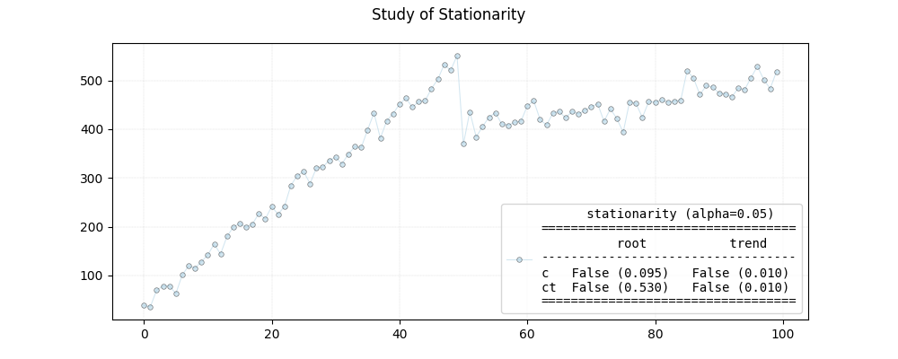

<!DOCTYPE html>
<html class="writer-html5" lang="en" >
<head>
  <meta charset="utf-8" /><meta name="generator" content="Docutils 0.17.1: http://docutils.sourceforge.net/" />

  <meta name="viewport" content="width=device-width, initial-scale=1.0" />
  <title>Step 03 - Time Series Analysis &mdash; pyamr 0.0.1 documentation</title>
      <link rel="stylesheet" href="../../../_static/pygments.css" type="text/css" />
      <link rel="stylesheet" href="../../../_static/css/theme.css" type="text/css" />
      <link rel="stylesheet" href="../../../_static/sg_gallery.css" type="text/css" />
      <link rel="stylesheet" href="../../../_static/sg_gallery-binder.css" type="text/css" />
      <link rel="stylesheet" href="../../../_static/sg_gallery-dataframe.css" type="text/css" />
      <link rel="stylesheet" href="../../../_static/sg_gallery-rendered-html.css" type="text/css" />
      <link rel="stylesheet" href="../../../_static/css/custom.css" type="text/css" />
    <link rel="shortcut icon" href="../../../_static/logo-pyamr-icon.png"/>
  <!--[if lt IE 9]>
    <script src="../../../_static/js/html5shiv.min.js"></script>
  <![endif]-->
  
        <script data-url_root="../../../" id="documentation_options" src="../../../_static/documentation_options.js"></script>
        <script src="../../../_static/jquery.js"></script>
        <script src="../../../_static/underscore.js"></script>
        <script src="../../../_static/doctools.js"></script>
    <script src="../../../_static/js/theme.js"></script>
    <link rel="index" title="Index" href="../../../genindex.html" />
    <link rel="search" title="Search" href="../../../search.html" />
    <link rel="next" title="Step 03 - TSA for trends" href="plot_step_04.html" />
    <link rel="prev" title="Step 02 - Temporal evolution" href="plot_step_02.html" /> 
</head>

<body class="wy-body-for-nav"> 
  <div class="wy-grid-for-nav">
    <nav data-toggle="wy-nav-shift" class="wy-nav-side">
      <div class="wy-side-scroll">
        <div class="wy-side-nav-search" >
            <a href="../../../index.html" class="icon icon-home"> pyamr
          </a>
<div role="search">
  <form id="rtd-search-form" class="wy-form" action="../../../search.html" method="get">
    <input type="text" name="q" placeholder="Search docs" />
    <input type="hidden" name="check_keywords" value="yes" />
    <input type="hidden" name="area" value="default" />
  </form>
</div>
        </div><div class="wy-menu wy-menu-vertical" data-spy="affix" role="navigation" aria-label="Navigation menu">
              <p class="caption" role="heading"><span class="caption-text">Tutorial</span></p>
<ul>
<li class="toctree-l1"><a class="reference internal" href="../../../usage/introduction.html">Introduction</a></li>
<li class="toctree-l1"><a class="reference internal" href="../../../usage/installation.html">Installation</a></li>
<li class="toctree-l1"><a class="reference internal" href="../../../usage/quickstart.html">Quickstart</a></li>
<li class="toctree-l1"><a class="reference internal" href="../../../usage/registries.html">Registries</a></li>
<li class="toctree-l1"><a class="reference internal" href="../../../usage/todo.html">Future Actions</a></li>
</ul>
<p class="caption" role="heading"><span class="caption-text">Example Galleries</span></p>
<ul class="current">
<li class="toctree-l1 current"><a class="reference internal" href="../index.html">Tutorial</a><ul class="current">
<li class="toctree-l2 current"><a class="reference internal" href="../index.html#step-by-step-guide">Step by step guide</a><ul class="current">
<li class="toctree-l3"><a class="reference internal" href="plot_step_00.html">Step 00 - Registries</a></li>
<li class="toctree-l3"><a class="reference internal" href="plot_step_01.html">Step 01 - Introduction</a></li>
<li class="toctree-l3"><a class="reference internal" href="plot_step_02.html">Step 02 - Temporal evolution</a></li>
<li class="toctree-l3 current"><a class="current reference internal" href="#">Step 03 - Time Series Analysis</a><ul>
<li class="toctree-l4"><a class="reference internal" href="#create-time-series-ts">Create time series (TS)</a></li>
<li class="toctree-l4"><a class="reference internal" href="#pearson-correlation-coefficient">Pearson correlation coefficient</a></li>
<li class="toctree-l4"><a class="reference internal" href="#augmented-dickey-fuller-test">Augmented Dickey-Fuller test</a></li>
<li class="toctree-l4"><a class="reference internal" href="#kwiatkowski-phillips-schmidt-shin-test">Kwiatkowski-Phillips-Schmidt-Shin test</a></li>
<li class="toctree-l4"><a class="reference internal" href="#trend-and-stationarity-in-ts">Trend and stationarity in TS</a></li>
</ul>
</li>
<li class="toctree-l3"><a class="reference internal" href="plot_step_04.html">Step 03 - TSA for trends</a></li>
</ul>
</li>
<li class="toctree-l2"><a class="reference internal" href="../index.html#amr-indexes">AMR indexes</a></li>
<li class="toctree-l2"><a class="reference internal" href="../index.html#metrics">Metrics</a></li>
<li class="toctree-l2"><a class="reference internal" href="../index.html#regression">Regression</a></li>
<li class="toctree-l2"><a class="reference internal" href="../index.html#statistics">Statistics</a></li>
</ul>
</li>
<li class="toctree-l1"><a class="reference internal" href="../../indexes/index.html">Examples with indexes</a></li>
<li class="toctree-l1"><a class="reference internal" href="../../forecasting/index.html">Examples with TSA</a></li>
<li class="toctree-l1"><a class="reference internal" href="../../reports/index.html">Reports</a></li>
<li class="toctree-l1"><a class="reference internal" href="../../visualization/index.html">Visualization</a></li>
</ul>
<p class="caption" role="heading"><span class="caption-text">API</span></p>
<ul>
<li class="toctree-l1"><a class="reference internal" href="../../../_apidoc/pyamr.html">pyamr package</a></li>
</ul>

        </div>
      </div>
    </nav>

    <section data-toggle="wy-nav-shift" class="wy-nav-content-wrap"><nav class="wy-nav-top" aria-label="Mobile navigation menu" >
          <i data-toggle="wy-nav-top" class="fa fa-bars"></i>
          <a href="../../../index.html">pyamr</a>
      </nav>

      <div class="wy-nav-content">
        <div class="rst-content">
          <div role="navigation" aria-label="Page navigation">
  <ul class="wy-breadcrumbs">
      <li><a href="../../../index.html" class="icon icon-home"></a> &raquo;</li>
          <li><a href="../index.html">Tutorial</a> &raquo;</li>
      <li>Step 03 - Time Series Analysis</li>
      <li class="wy-breadcrumbs-aside">
            <a href="../../../_sources/_examples/tutorial/guide/plot_step_03.rst.txt" rel="nofollow"> View page source</a>
      </li>
  </ul>
  <hr/>
</div>
          <div role="main" class="document" itemscope="itemscope" itemtype="http://schema.org/Article">
           <div itemprop="articleBody">
             
  <div class="sphx-glr-download-link-note admonition note">
<p class="admonition-title">Note</p>
<p>Click <a class="reference internal" href="#sphx-glr-download-examples-tutorial-guide-plot-step-03-py"><span class="std std-ref">here</span></a>
to download the full example code</p>
</div>
<section class="sphx-glr-example-title" id="step-03-time-series-analysis">
<span id="sphx-glr-examples-tutorial-guide-plot-step-03-py"></span><h1>Step 03 - Time Series Analysis<a class="headerlink" href="#step-03-time-series-analysis" title="Permalink to this headline"></a></h1>
<div class="admonition warning">
<p class="admonition-title">Warning</p>
<p>Verify tests with conditions from stattools.</p>
</div>
<p>Useful references:</p>
<ul class="simple">
<li><p><a class="reference external" href="https://www.machinelearningplus.com/time-series/kpss-test-for-stationarity/">https://www.machinelearningplus.com/time-series/kpss-test-for-stationarity/</a></p></li>
<li><p><a class="reference external" href="https://www.statsmodels.org/dev/examples/notebooks/generated/autoregressions.html">https://www.statsmodels.org/dev/examples/notebooks/generated/autoregressions.html</a></p></li>
</ul>
<section id="create-time-series-ts">
<h2>Create time series (TS)<a class="headerlink" href="#create-time-series-ts" title="Permalink to this headline"></a></h2>
<p>First lets create an artificial series. The series has been plotted
ad the end of the tutorial.</p>
<div class="highlight-default notranslate"><div class="highlight"><pre><span></span><span class="linenos">22</span> <span class="c1"># ----------------------------</span>
<span class="linenos">23</span> <span class="c1"># create data</span>
<span class="linenos">24</span> <span class="c1"># ----------------------------</span>
<span class="linenos">25</span> <span class="c1"># Import specific</span>
<span class="linenos">26</span> <span class="kn">from</span> <span class="nn">pyamr.datasets.load</span> <span class="kn">import</span> <span class="n">make_timeseries</span>
<span class="linenos">27</span>
<span class="linenos">28</span> <span class="c1"># Create timeseries data</span>
<span class="linenos">29</span> <span class="n">x</span><span class="p">,</span> <span class="n">y</span><span class="p">,</span> <span class="n">f</span> <span class="o">=</span> <span class="n">make_timeseries</span><span class="p">()</span>
</pre></div>
</div>
</section>
<section id="pearson-correlation-coefficient">
<h2>Pearson correlation coefficient<a class="headerlink" href="#pearson-correlation-coefficient" title="Permalink to this headline"></a></h2>
<p>It measures the linear correlation between two variables with a value within the range
[-1,1]. Coefficient values of -1, 0 and 1 indicate total negative linear correlation, no
linear correlation and total positive correlation respectively. In this study, the
coefficient is used to assess whether or not there is a linear correlation between the
number of observations (susceptibility test records) and the computed resistance index.</p>
<p>See also <a class="reference internal" href="../statistics/plot_core_stats_correlation.html#sphx-glr-examples-tutorial-statistics-plot-core-stats-correlation-py"><span class="std std-ref">Statistical test - Correlation</span></a></p>
<div class="highlight-default notranslate"><div class="highlight"><pre><span></span><span class="linenos">44</span> <span class="c1"># -------------------------------</span>
<span class="linenos">45</span> <span class="c1"># Pearson correlation coefficient</span>
<span class="linenos">46</span> <span class="c1"># -------------------------------</span>
<span class="linenos">47</span> <span class="c1"># Import pyAMR</span>
<span class="linenos">48</span> <span class="kn">from</span> <span class="nn">pyamr.core.stats.correlation</span> <span class="kn">import</span> <span class="n">CorrelationWrapper</span>
<span class="linenos">49</span>
<span class="linenos">50</span> <span class="c1"># Create object</span>
<span class="linenos">51</span> <span class="n">correlation</span> <span class="o">=</span> <span class="n">CorrelationWrapper</span><span class="p">()</span><span class="o">.</span><span class="n">fit</span><span class="p">(</span><span class="n">x1</span><span class="o">=</span><span class="n">y</span><span class="p">,</span> <span class="n">x2</span><span class="o">=</span><span class="n">f</span><span class="p">)</span>
<span class="linenos">52</span>
<span class="linenos">53</span> <span class="c1"># Print summary.</span>
<span class="linenos">54</span> <span class="nb">print</span><span class="p">(</span><span class="s2">&quot;</span><span class="se">\n</span><span class="s2">&quot;</span><span class="p">)</span>
<span class="linenos">55</span> <span class="nb">print</span><span class="p">(</span><span class="n">correlation</span><span class="o">.</span><span class="n">as_summary</span><span class="p">())</span>
</pre></div>
</div>
<p class="sphx-glr-script-out">Out:</p>
<div class="sphx-glr-script-out highlight-none notranslate"><div class="highlight"><pre><span></span>         Correlation
==============================
Pearson:                 0.757
Spearman:                0.751
Cross correlation: 4859308.327
==============================
</pre></div>
</div>
</section>
<section id="augmented-dickey-fuller-test">
<h2>Augmented Dickey-Fuller test<a class="headerlink" href="#augmented-dickey-fuller-test" title="Permalink to this headline"></a></h2>
<p>The Augmented Dickey-Fuller - <code class="docutils literal notranslate"><span class="pre">ADF</span></code> - test can be used to test for a unit root
in a univariate process in the presence of serial correlation. The intuition behind
a unit root test is that it determines how strongly a time series is defined by a trend.
<code class="docutils literal notranslate"><span class="pre">ADF</span></code> tests the null hypothesis that a unit root is present in a time series sample.
The alternative hypothesis is different depending on which version of the test is used,
but is usually stationarity or trend-stationarity. The more negative the statistic, the
stronger the rejection of the hypothesis that there is a unit root at some level
of confidence.</p>
<table class="docutils align-default">
<colgroup>
<col style="width: 9%" />
<col style="width: 39%" />
<col style="width: 53%" />
</colgroup>
<thead>
<tr class="row-odd"><th class="head"><p>H</p></th>
<th class="head"><p>Hypothesis</p></th>
<th class="head"><p>Stationarity</p></th>
</tr>
</thead>
<tbody>
<tr class="row-even"><td><p><strong>H0</strong></p></td>
<td><p>The series has a unit root</p></td>
<td><p><code class="docutils literal notranslate"><span class="pre">Non-stationary</span></code></p></td>
</tr>
<tr class="row-odd"><td><p><strong>H1</strong></p></td>
<td><p>The series has no unit root</p></td>
<td><p><code class="docutils literal notranslate"><span class="pre">Stationary</span></code> / <code class="docutils literal notranslate"><span class="pre">Trend-Stationary</span></code></p></td>
</tr>
</tbody>
</table>
<div class="line-block">
<div class="line">If p-value &gt; 0.05: Failed to reject H0.</div>
<div class="line">If p-value &lt;= 0.05: Reject H0.</div>
</div>
<p>See also <a class="reference internal" href="../statistics/plot_core_stats_adfuller.html#sphx-glr-examples-tutorial-statistics-plot-core-stats-adfuller-py"><span class="std std-ref">Statistical test - ADFuller</span></a></p>
<div class="highlight-default notranslate"><div class="highlight"><pre><span></span><span class="linenos">83</span> <span class="c1"># ----------------------------</span>
<span class="linenos">84</span> <span class="c1"># ADFuller</span>
<span class="linenos">85</span> <span class="c1"># ----------------------------</span>
<span class="linenos">86</span> <span class="c1"># Import statsmodels</span>
<span class="linenos">87</span> <span class="kn">from</span> <span class="nn">statsmodels.tsa.stattools</span> <span class="kn">import</span> <span class="n">adfuller</span>
<span class="linenos">88</span>
<span class="linenos">89</span> <span class="c1"># Import pyAMR</span>
<span class="linenos">90</span> <span class="kn">from</span> <span class="nn">pyamr.core.stats.adfuller</span> <span class="kn">import</span> <span class="n">ADFWrapper</span>
<span class="linenos">91</span>
<span class="linenos">92</span> <span class="c1"># Create wrapper</span>
<span class="linenos">93</span> <span class="n">adf</span> <span class="o">=</span> <span class="n">ADFWrapper</span><span class="p">(</span><span class="n">adfuller</span><span class="p">)</span><span class="o">.</span><span class="n">fit</span><span class="p">(</span><span class="n">x</span><span class="o">=</span><span class="n">y</span><span class="p">,</span> <span class="n">regression</span><span class="o">=</span><span class="s1">&#39;ct&#39;</span><span class="p">)</span>
<span class="linenos">94</span>
<span class="linenos">95</span> <span class="nb">print</span><span class="p">(</span><span class="s2">&quot;</span><span class="se">\n</span><span class="s2">&quot;</span><span class="p">)</span>
<span class="linenos">96</span> <span class="nb">print</span><span class="p">(</span><span class="n">adf</span><span class="o">.</span><span class="n">as_summary</span><span class="p">())</span>
</pre></div>
</div>
<p class="sphx-glr-script-out">Out:</p>
<div class="sphx-glr-script-out highlight-none notranslate"><div class="highlight"><pre><span></span>    adfuller test stationarity (ct)
=======================================
statistic:                       -1.754
pvalue:                         0.72636
nlags:                                1
nobs:                                98
stationarity (α=0.05):   non-stationary
=======================================
</pre></div>
</div>
</section>
<section id="kwiatkowski-phillips-schmidt-shin-test">
<h2>Kwiatkowski-Phillips-Schmidt-Shin test<a class="headerlink" href="#kwiatkowski-phillips-schmidt-shin-test" title="Permalink to this headline"></a></h2>
<p>The Kwiatkowski–Phillips–Schmidt–Shin - <code class="docutils literal notranslate"><span class="pre">KPSS</span></code> - test is used to identify
whether a time series is stationary around a deterministic trend (thus
trend stationary) against the alternative of a unit root.</p>
<p>In the KPSS test, the absence of a unit root is not a proof of stationarity
but, by design, of trend stationarity. This is an important distinction since
it is possible for a time series to be non-stationary, have no unit root yet
be trend-stationary.</p>
<p>In both, unit-root and trend-stationary processes, the mean can be increasing
or decreasing over time; however, in the presence of a shock, trend-stationary
processes revert to this mean tendency in the long run (deterministic trend)
while unit-root processes have a permanent impact (stochastic trend).</p>
<table class="docutils align-default">
<colgroup>
<col style="width: 9%" />
<col style="width: 39%" />
<col style="width: 53%" />
</colgroup>
<thead>
<tr class="row-odd"><th class="head"><p>H</p></th>
<th class="head"><p>Hypothesis</p></th>
<th class="head"><p>Stationarity</p></th>
</tr>
</thead>
<tbody>
<tr class="row-even"><td><p><strong>H0</strong></p></td>
<td><p>The series has no unit root</p></td>
<td><p><code class="docutils literal notranslate"><span class="pre">Trend-stationary</span></code></p></td>
</tr>
<tr class="row-odd"><td><p><strong>H1</strong></p></td>
<td><p>The series has a unit root</p></td>
<td><p><code class="docutils literal notranslate"><span class="pre">No</span> <span class="pre">Trend-Stationary</span></code></p></td>
</tr>
</tbody>
</table>
<div class="line-block">
<div class="line">If p-value &gt; alpha: Failed to reject H0</div>
<div class="line">If p-value &lt;= alpha: Reject H0</div>
</div>
<div class="highlight-default notranslate"><div class="highlight"><pre><span></span><span class="linenos">130</span> <span class="c1"># --------------------------------</span>
<span class="linenos">131</span> <span class="c1"># Kpss</span>
<span class="linenos">132</span> <span class="c1"># --------------------------------</span>
<span class="linenos">133</span> <span class="c1"># Used within StationarityWrapper!</span>
</pre></div>
</div>
</section>
<section id="trend-and-stationarity-in-ts">
<h2>Trend and stationarity in TS<a class="headerlink" href="#trend-and-stationarity-in-ts" title="Permalink to this headline"></a></h2>
<p>An analysis of stationarity around a trend was carried out to identify time series
satisfying the assumptions posed by ARIMA. The augmented Dickey–Fuller test (ADF) was
used to determine the presence of a unit root. When the other roots of the characteristic
function lie inside the unit circle the first difference of the process is stationary. Due
to this property, these are also called difference-stationary processes. Since the absence
of unit root is not a proof of non-stationarity, the Kwiatkowski–Phillips–Schmidt–Shin
(KPSS) test was used to identify the existence of an underlying trend which can also be
removed to obtain a stationary process. These are called trend-stationary processes. In
both, unit-root and trend-stationary processes, the mean can be increasing or decreasing
over time; however, in the presence of a shock, trend-stationary processes revert to this
mean tendency in the long run (deterministic trend) while unit-root processes have a
permanent impact (stochastic trend). The significance level of the tests was set to 0.05.</p>
<p>See also <a class="reference internal" href="../statistics/plot_core_stats_stationarity.html#sphx-glr-examples-tutorial-statistics-plot-core-stats-stationarity-py"><span class="std std-ref">Statistical test - Stationarity</span></a></p>
<div class="highlight-default notranslate"><div class="highlight"><pre><span></span><span class="linenos">157</span> <span class="c1"># ----------------------------</span>
<span class="linenos">158</span> <span class="c1"># Stationarity</span>
<span class="linenos">159</span> <span class="c1"># ----------------------------</span>
<span class="linenos">160</span> <span class="c1"># Import generic</span>
<span class="linenos">161</span> <span class="kn">import</span> <span class="nn">matplotlib.pyplot</span> <span class="k">as</span> <span class="nn">plt</span>
<span class="linenos">162</span>
<span class="linenos">163</span> <span class="c1"># Import pyAMR</span>
<span class="linenos">164</span> <span class="kn">from</span> <span class="nn">pyamr.core.stats.stationarity</span> <span class="kn">import</span> <span class="n">StationarityWrapper</span>
<span class="linenos">165</span>
<span class="linenos">166</span> <span class="c1"># Define kwargs</span>
<span class="linenos">167</span> <span class="n">adf_kwargs</span> <span class="o">=</span> <span class="p">{}</span>
<span class="linenos">168</span> <span class="n">kpss_kwargs</span> <span class="o">=</span> <span class="p">{}</span>
<span class="linenos">169</span>
<span class="linenos">170</span> <span class="c1"># Compute stationarity</span>
<span class="linenos">171</span> <span class="n">stationarity</span> <span class="o">=</span> <span class="n">StationarityWrapper</span><span class="p">()</span><span class="o">.</span><span class="n">fit</span><span class="p">(</span><span class="n">x</span><span class="o">=</span><span class="n">y</span><span class="p">,</span>
<span class="linenos">172</span>     <span class="n">adf_kwargs</span><span class="o">=</span><span class="n">adf_kwargs</span><span class="p">,</span> <span class="n">kpss_kwargs</span><span class="o">=</span><span class="n">kpss_kwargs</span><span class="p">)</span>
<span class="linenos">173</span>
<span class="linenos">174</span> <span class="c1"># Print summary.</span>
<span class="linenos">175</span> <span class="nb">print</span><span class="p">(</span><span class="s2">&quot;</span><span class="se">\n</span><span class="s2">&quot;</span><span class="p">)</span>
<span class="linenos">176</span> <span class="nb">print</span><span class="p">(</span><span class="n">stationarity</span><span class="o">.</span><span class="n">as_summary</span><span class="p">())</span>
<span class="linenos">177</span>
<span class="linenos">178</span>
<span class="linenos">179</span> <span class="c1"># ----------------</span>
<span class="linenos">180</span> <span class="c1"># plot</span>
<span class="linenos">181</span> <span class="c1"># ----------------</span>
<span class="linenos">182</span> <span class="c1"># Font type.</span>
<span class="linenos">183</span> <span class="n">font</span> <span class="o">=</span> <span class="p">{</span>
<span class="linenos">184</span>     <span class="s1">&#39;family&#39;</span><span class="p">:</span> <span class="s1">&#39;monospace&#39;</span><span class="p">,</span>
<span class="linenos">185</span>     <span class="s1">&#39;weight&#39;</span><span class="p">:</span> <span class="s1">&#39;normal&#39;</span><span class="p">,</span>
<span class="linenos">186</span>     <span class="s1">&#39;size&#39;</span><span class="p">:</span> <span class="mi">10</span><span class="p">,</span>
<span class="linenos">187</span> <span class="p">}</span>
<span class="linenos">188</span>
<span class="linenos">189</span> <span class="c1"># Create figure</span>
<span class="linenos">190</span> <span class="n">fig</span><span class="p">,</span> <span class="n">ax</span> <span class="o">=</span> <span class="n">plt</span><span class="o">.</span><span class="n">subplots</span><span class="p">(</span><span class="mi">1</span><span class="p">,</span> <span class="mi">1</span><span class="p">,</span> <span class="n">figsize</span><span class="o">=</span><span class="p">(</span><span class="mi">10</span><span class="p">,</span> <span class="mi">4</span><span class="p">))</span>
<span class="linenos">191</span>
<span class="linenos">192</span> <span class="c1"># Plot truth values.</span>
<span class="linenos">193</span> <span class="n">ax</span><span class="o">.</span><span class="n">plot</span><span class="p">(</span><span class="n">y</span><span class="p">,</span> <span class="n">color</span><span class="o">=</span><span class="s1">&#39;#A6CEE3&#39;</span><span class="p">,</span> <span class="n">alpha</span><span class="o">=</span><span class="mf">0.5</span><span class="p">,</span> <span class="n">marker</span><span class="o">=</span><span class="s1">&#39;o&#39;</span><span class="p">,</span>
<span class="linenos">194</span>          <span class="n">markeredgecolor</span><span class="o">=</span><span class="s1">&#39;k&#39;</span><span class="p">,</span> <span class="n">markeredgewidth</span><span class="o">=</span><span class="mf">0.5</span><span class="p">,</span>
<span class="linenos">195</span>          <span class="n">markersize</span><span class="o">=</span><span class="mi">4</span><span class="p">,</span> <span class="n">linewidth</span><span class="o">=</span><span class="mf">0.75</span><span class="p">,</span>
<span class="linenos">196</span>          <span class="n">label</span><span class="o">=</span><span class="n">stationarity</span><span class="o">.</span><span class="n">as_summary</span><span class="p">())</span>
<span class="linenos">197</span>
<span class="linenos">198</span> <span class="c1"># Format axes</span>
<span class="linenos">199</span> <span class="n">ax</span><span class="o">.</span><span class="n">grid</span><span class="p">(</span><span class="n">color</span><span class="o">=</span><span class="s1">&#39;gray&#39;</span><span class="p">,</span> <span class="n">linestyle</span><span class="o">=</span><span class="s1">&#39;--&#39;</span><span class="p">,</span> <span class="n">linewidth</span><span class="o">=</span><span class="mf">0.2</span><span class="p">,</span> <span class="n">alpha</span><span class="o">=</span><span class="mf">0.5</span><span class="p">)</span>
<span class="linenos">200</span> <span class="n">ax</span><span class="o">.</span><span class="n">legend</span><span class="p">(</span><span class="n">prop</span><span class="o">=</span><span class="n">font</span><span class="p">,</span> <span class="n">loc</span><span class="o">=</span><span class="mi">4</span><span class="p">)</span>
<span class="linenos">201</span>
<span class="linenos">202</span> <span class="c1"># Addd title</span>
<span class="linenos">203</span> <span class="n">plt</span><span class="o">.</span><span class="n">suptitle</span><span class="p">(</span><span class="s2">&quot;Study of Stationarity&quot;</span><span class="p">)</span>
<span class="linenos">204</span>
<span class="linenos">205</span> <span class="n">plt</span><span class="o">.</span><span class="n">show</span><span class="p">()</span>
</pre></div>
</div>
<p class="sphx-glr-script-out">Out:</p>
<div class="sphx-glr-script-out highlight-none notranslate"><div class="highlight"><pre><span></span>c:\users\kelda\desktop\repositories\virtualenvs\test-pyamr\lib\site-packages\statsmodels\tsa\stattools.py:2019: InterpolationWarning:

The test statistic is outside of the range of p-values available in the
look-up table. The actual p-value is smaller than the p-value returned.


c:\users\kelda\desktop\repositories\virtualenvs\test-pyamr\lib\site-packages\statsmodels\tsa\stattools.py:2019: InterpolationWarning:

The test statistic is outside of the range of p-values available in the
look-up table. The actual p-value is smaller than the p-value returned.


(2.4, 0.9, {&#39;10%&#39;: 1.2888, &#39;5%&#39;: 1.1412, &#39;2.5%&#39;: 1.0243, &#39;1%&#39;: 0.907})


      stationarity (alpha=0.05)
==================================
          root           trend
----------------------------------
c   False (0.121)   False (0.010)
ct  False (0.726)   False (0.010)
==================================
</pre></div>
</div>
<p class="sphx-glr-timing"><strong>Total running time of the script:</strong> ( 0 minutes  0.832 seconds)</p>
<div class="sphx-glr-footer class sphx-glr-footer-example docutils container" id="sphx-glr-download-examples-tutorial-guide-plot-step-03-py">
<div class="sphx-glr-download sphx-glr-download-python docutils container">
<p><a class="reference download internal" download="" href="../../../_downloads/fb7d8c53e71d819d5b8b4b63b4dff6d8/plot_step_03.py"><code class="xref download docutils literal notranslate"><span class="pre">Download</span> <span class="pre">Python</span> <span class="pre">source</span> <span class="pre">code:</span> <span class="pre">plot_step_03.py</span></code></a></p>
</div>
<div class="sphx-glr-download sphx-glr-download-jupyter docutils container">
<p><a class="reference download internal" download="" href="../../../_downloads/293f6683ed3890ad168f2db6d3dbd8bd/plot_step_03.ipynb"><code class="xref download docutils literal notranslate"><span class="pre">Download</span> <span class="pre">Jupyter</span> <span class="pre">notebook:</span> <span class="pre">plot_step_03.ipynb</span></code></a></p>
</div>
</div>
<p class="sphx-glr-signature"><a class="reference external" href="https://sphinx-gallery.github.io">Gallery generated by Sphinx-Gallery</a></p>
</section>
</section>


           </div>
          </div>
          <footer><div class="rst-footer-buttons" role="navigation" aria-label="Footer">
        <a href="plot_step_02.html" class="btn btn-neutral float-left" title="Step 02 - Temporal evolution" accesskey="p" rel="prev"><span class="fa fa-arrow-circle-left" aria-hidden="true"></span> Previous</a>
        <a href="plot_step_04.html" class="btn btn-neutral float-right" title="Step 03 - TSA for trends" accesskey="n" rel="next">Next <span class="fa fa-arrow-circle-right" aria-hidden="true"></span></a>
    </div>

  <hr/>

  <div role="contentinfo">
    <p>&#169; Copyright 2021, Bernard Hernandez.</p>
  </div>

  Built with <a href="https://www.sphinx-doc.org/">Sphinx</a> using a
    <a href="https://github.com/readthedocs/sphinx_rtd_theme">theme</a>
    provided by <a href="https://readthedocs.org">Read the Docs</a>.
   

</footer>
        </div>
      </div>
    </section>
  </div>
  <script>
      jQuery(function () {
          SphinxRtdTheme.Navigation.enable(true);
      });
  </script> 

</body>
</html>